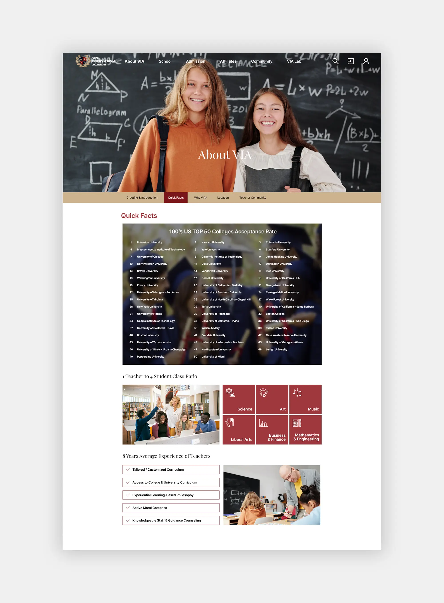
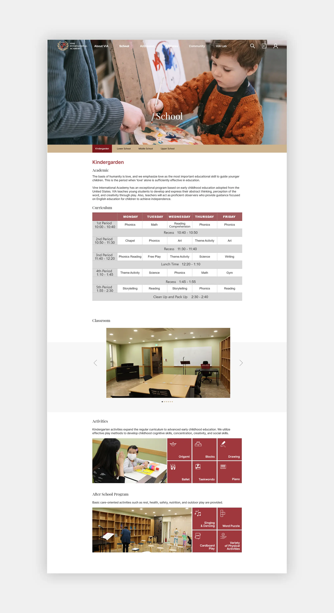

Vine International Academy
국제학교의 교육과정과 입학 정보를 사용자 친화적인 구조와 반응형 UI로 제공하는 공식 웹사이트입니다.
- Role
- 프론트엔드 개발
- Period
- 2021.11 — 2022.01
- Stack
- React · TypeScript
- Scope
- 학교 소개 · 교육과정 · 입학 안내 · 반응형
01 / Overview
프로젝트 소개
VIA 국제학교의 브랜드 가치와 교육 전문성을 온라인에서 전달하는 공식 웹사이트입니다. 미국 대학 진학 준비를 위한 커리큘럼과 프로그램, 입학 정보를 학부모와 학생이 쉽게 탐색할 수 있도록 구성했습니다.
02 / Features
주요 기능
- 학교와 교육 철학 소개
- 유치원·초등·중등·고등 과정별 교육 프로그램 안내
- 입학 정보와 학교 커뮤니티 콘텐츠 제공
- 컬러·타이포그래피·이미지를 활용한 브랜드 아이덴티티 표현
- 데스크톱과 모바일 환경에 대응하는 반응형 화면
03 / Technology
기술 스택 및 프로젝트 화면
- React와 TypeScript 기반 웹사이트
- 학부모와 학생의 정보 탐색 흐름을 고려한 반응형 UI

